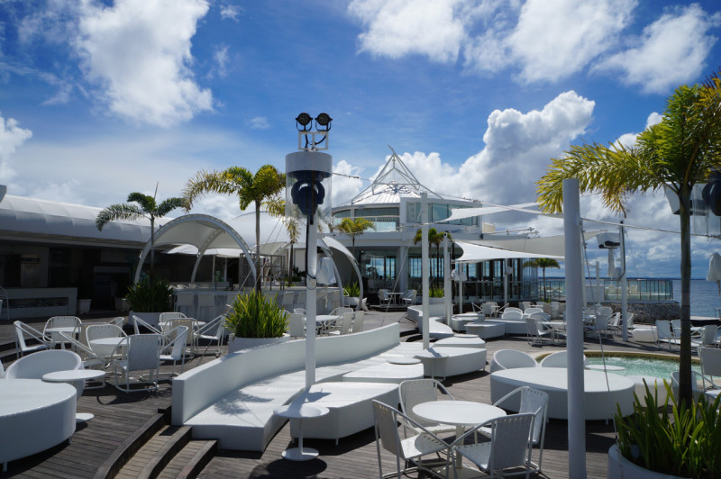

세부는 필리핀에서 두 번째로 큰 대도시이며 리조트가 잘 발달된 대표적 관광지 중 하나이다. 
12~5월은 건기로 야외 활동하기 좋다. 그중에서도 2~4월은 강수량이 가장 적다. 세부는 연중 기온차가 거의 없고 건기와 우기 간 강우량 차도 100밀리미터 내외다. 6~10월 우기에는 높은 습도로 후텁지근하고, 한낮이나 밤 늦게 스콜성 폭우가 쏟아진다. 외부활동이 많다면 건기가 여행하기 좋지만, 리조트 휴식을 우선한다면 우기에도 큰 지장은 없다.